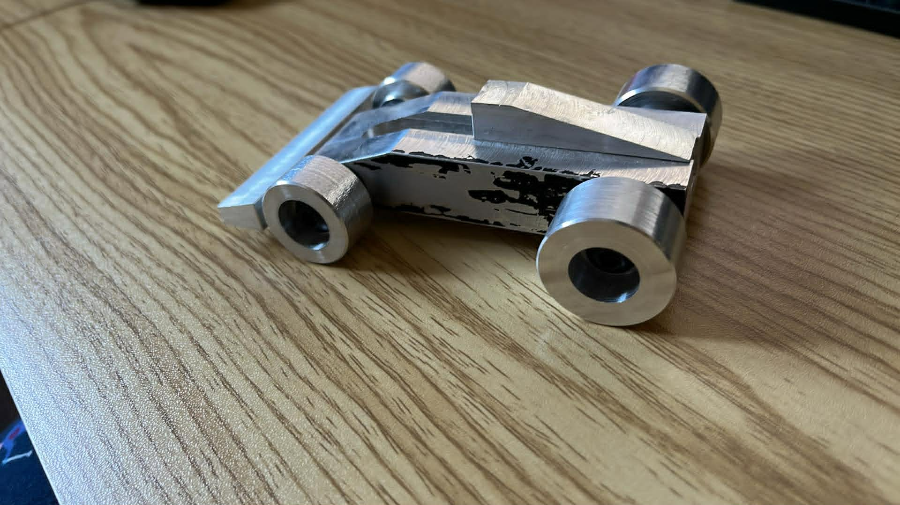
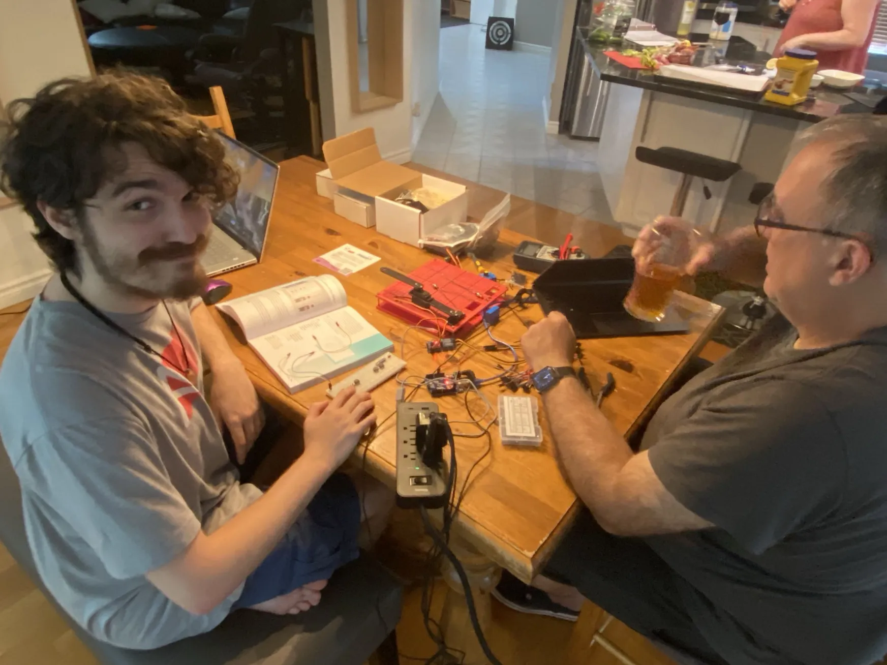

Étude de fabrication d'une meuleuse
Conception de système de production :
Conception complète d’une meuleuse incluant l’analyse des besoins, la modélisation du procédé de fabrication
et la sélection des composantes.
Technos : CAO, analyse mécanique, estimation de coûts
Rôle : Conception, recherche de pièces et documentation technique complète

Usinage d'une petite voiture
Usinage et tolérances :
Fabrication d’un véhicule en aluminium à l’aide de machines-outils incluant fraiseuse et perceuse.
Technos : Usinage, fabrication mécanique, sécurité machine
Rôle : Fabrication, conception du patron et maintenance de l’équipement

Bras robotique articulé
Mouvement 2D cinématique inverse :
Développement d’un bras robotique à multiples joints utilisant Arduino,
servo moteurs et pièces imprimées 3D.
Technos : Arduino, C++, impression 3D, servomoteurs
Rôle : Programmation et intégration mécanique

Voiture téléguidée
Conception et programmation d’une voiture téléguidée avec pièces imprimées en 3D.
Technos : Impression 3D, électronique, programmation
Rôle : Assemblage, conception et intégration du contrôle
Installation d’outils en usine
Stage en usine :
Mise en place de stations d’outils dans une usine avec optimisation des flux de travail.
Technos : Organisation industrielle, optimisation, logistique
Rôle : Installation, classification et standardisation des postes
Exosquelette de main
Assemblage artisanal :
Prototype d’une main articulée en bois actionnée par câbles simulant les mouvements des doigts.
Technos : Mécanique, prototypage, conception biomécanique
Rôle : Conception et assemblage du système mécanique